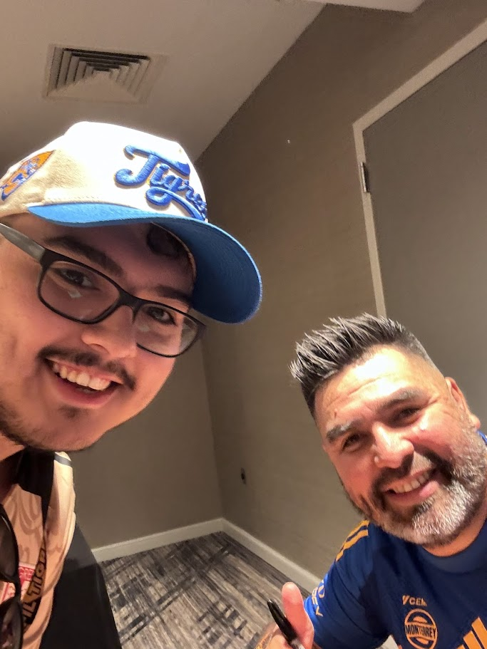
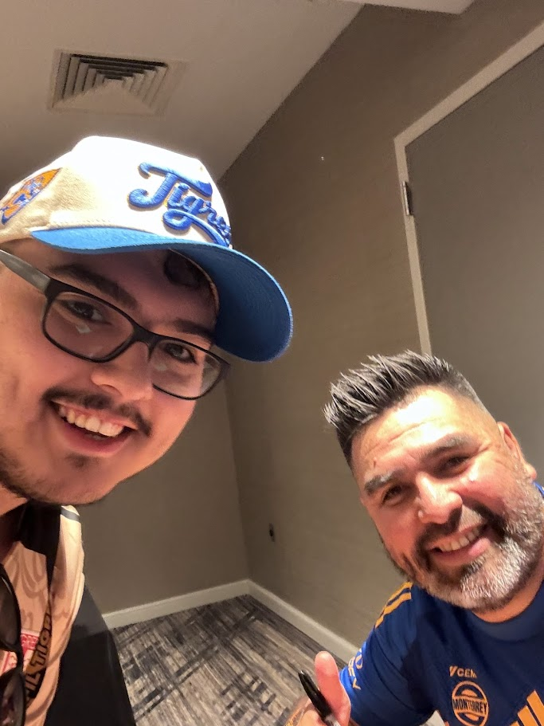

Signed Jerseys
Discover the stories behind each signed jersey!
Discover the stories behind each signed jersey!
This jersey holds a special place in Cesar Sepulveda's collection. Originally purchased as a standard team jersey, it became an unforgettable piece of history thanks to a stroke of luck. In July 2024, Cesar won a once-in-a-lifetime opportunity via a Tigres sweepstakes. The prize allowed him to meet the entire Tigres roster in Houston, Texas, at their hotel, prior to their highly anticipated match against Miami FC. During this incredible event, Cesar had the jersey signed by the entire team, including legendary players like André-Pierre Gignac, Nahuel Guzmán, Guido Pizarro, Juan Pablo Vigón, Juan Brunetta, Sebastián Córdova, Diego Lainez, Marcelo Flores, and many more. This jersey now stands as a cherished memento of an extraordinary moment with his favorite team.
In 2022, Cesar Sepulveda's Tigres Femenil jersey became a cherished keepsake when he had the incredible opportunity to meet the team and secure autographs from several key players. This jersey, signed by standout stars such as Jana Gutiérrez, Stephany Mayor, Cecilia Santiago, Bianca Sierra, Greta Espinoza, and Lizbeth Ovalle, represents a memorable connection to one of the most successful squads in Mexican women’s soccer. The jersey holds a special place in Cesar's collection as a symbol of Tigres Femenil's excellence and the unforgettable experience of meeting these talented players.
 
